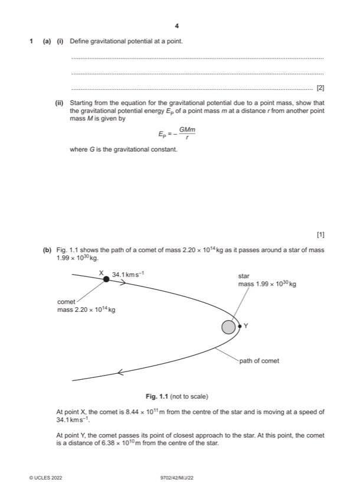

Question 1

Original paper page 4
Part 1(a)(i) — solution
- [B1] Obtain/use: work (done) per unit mass
- [B1] Obtain/use: work (done on mass) in moving mass from infinity (to the point)
Mark points
- [B1] Obtain/use: work (done) per unit mass
- [B1] Obtain/use: work (done on mass) in moving mass from infinity (to the point)
Part 1(a)(ii) — solution
- [B1] Obtain/use: EP = ϕm
Mark points
- [B1] Obtain/use: EP = ϕm
Part 1(b)(i) — solution
- [A1] Obtain/use: = 4.23 1023 J
Mark points
- [A1] Obtain/use: = 4.23 1023 J
Part 1(b)(ii) — solution
- [B1] Obtain/use: (gravitational) force is attractive so decrease
Mark points
- [B1] Obtain/use: (gravitational) force is attractive so decrease
Part 1(b)(iii) — solution
- [A1] Obtain/use: v (= 70 800 m s–1) = 70.8 km s–1
Mark points
- [A1] Obtain/use: v (= 70 800 m s–1) = 70.8 km s–1
Part 1(c) — solution
- [B1] Obtain/use: both PE and KE equations include m, so path is unchanged
Mark points
- [B1] Obtain/use: both PE and KE equations include m, so path is unchanged